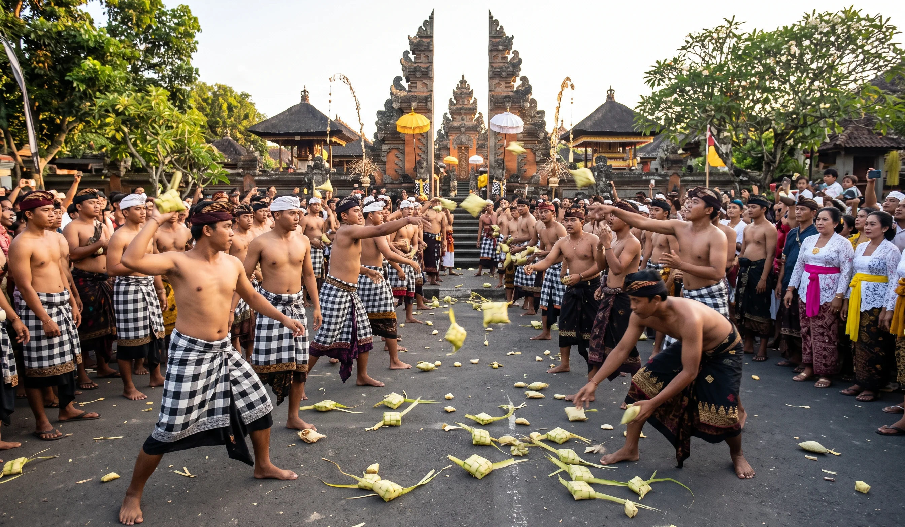
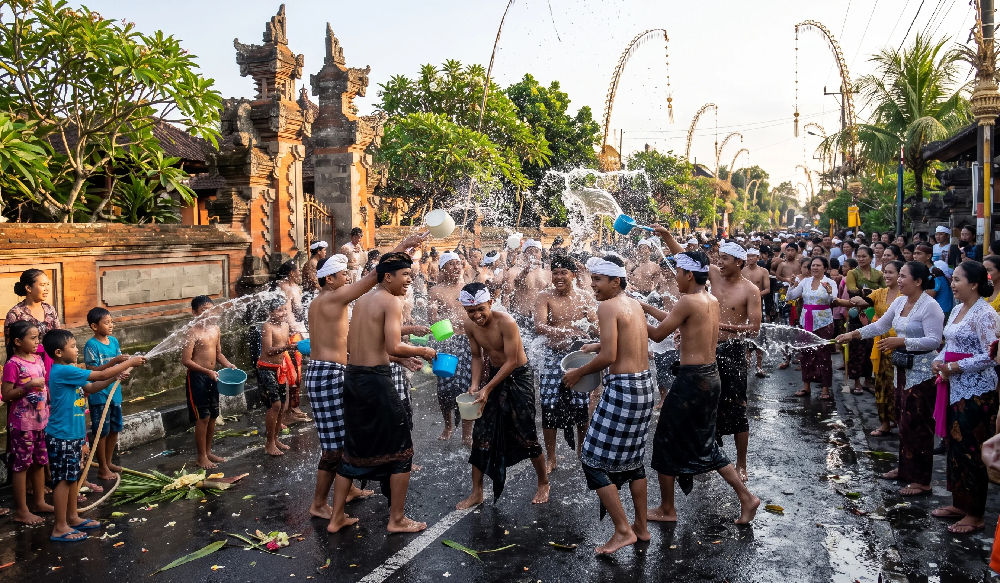
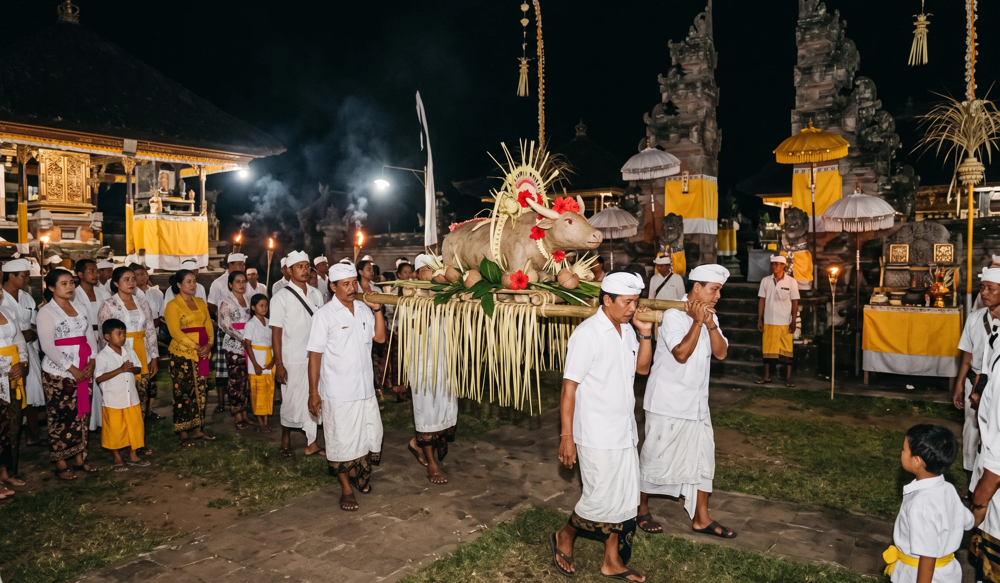
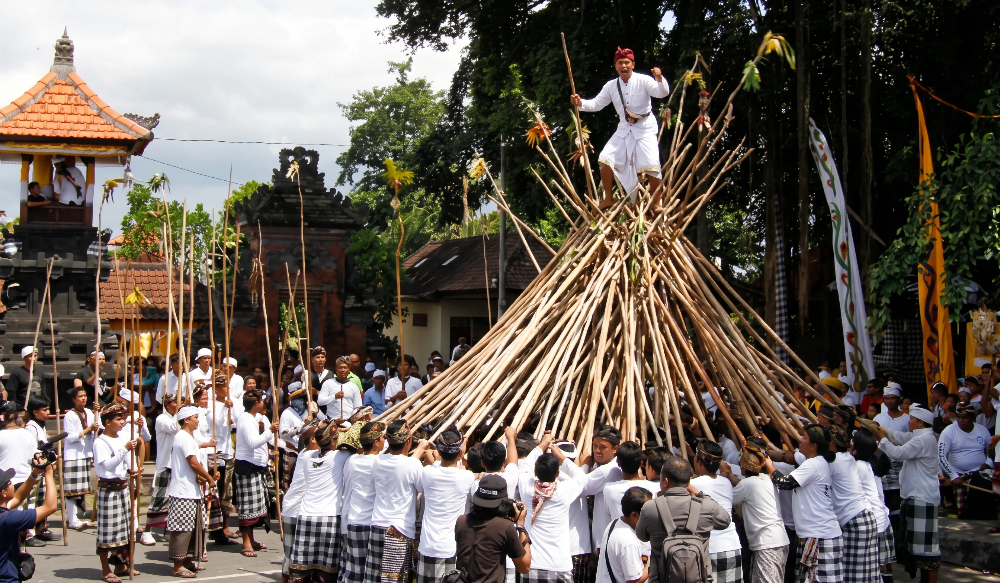
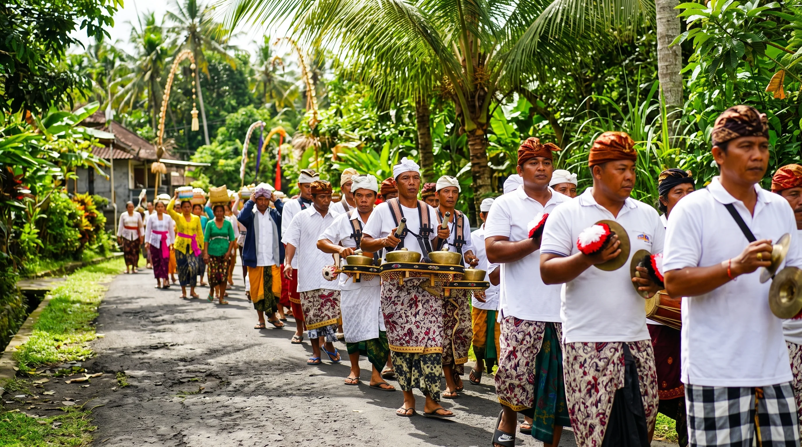

Tradisi
Siat Tipat Bantal
Tradisi saling melempar ketupat dan bantal sebagai simbol kesuburan dan kesejahteraan, yang berasal dari Desa Kapal, Badung.
JelajahiTidak ada tradisi yang cocok dengan kata kunci "".

Tradisi
Tradisi saling melempar ketupat dan bantal sebagai simbol kesuburan dan kesejahteraan, yang berasal dari Desa Kapal, Badung.
Jelajahi
Tradisi
Tradisi perang air saat Ngembak Geni yang mempertemukan dua sumber air di Banjar Teba, Desa Adat Jimbaran, Badung.
Jelajahi
Tradisi
Tradisi sakral berupa persembahan berbentuk kerbau, terbuat dari ketan dalam upacara keagamaan, berasal Desa Adat Kapal, Kecamatan Mengwi, Badung.
Jelajahi
Tradisi
Tradisi mengadu tongkat kayu sebagai simbol persatuan dan ritual memohon keselamatan, berasal dari Desa Munggu, Kecamatan Mengwi, Kabupaten Badung.
Jelajahi
Tradisi
Tradisi pemuda Desa Adat Jimbaran menjelang Nyepi. Tiga kelompok berjalan dari arah berbeda, bertemu untuk melakukan prosesi api, lalu menampilkan seni dan budaya.
JelajahiTradisi
Tradisi perang api di Desa Adat Tuban, Kecamatan Kuta, Badung, sebagai bagian dari upacara untuk melepas kekotoran diri.
JelajahiWilayah Bali
Kembali ke peta wilayah